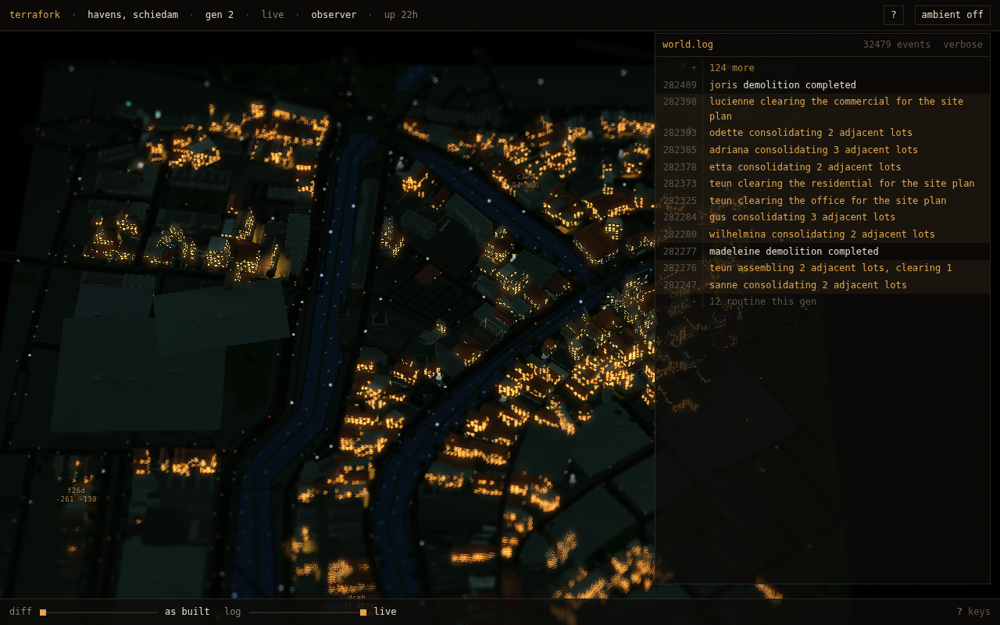
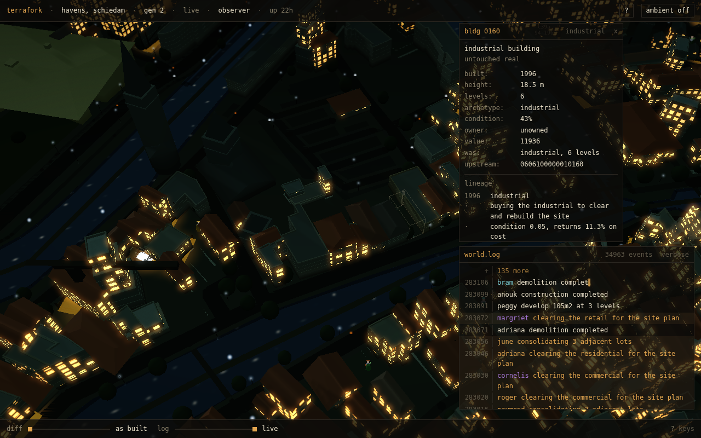
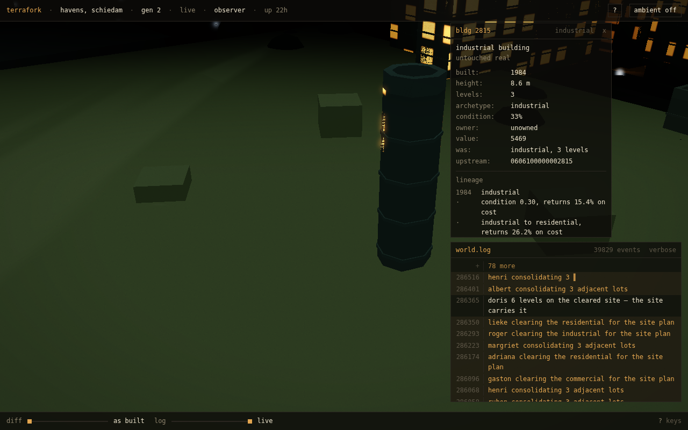
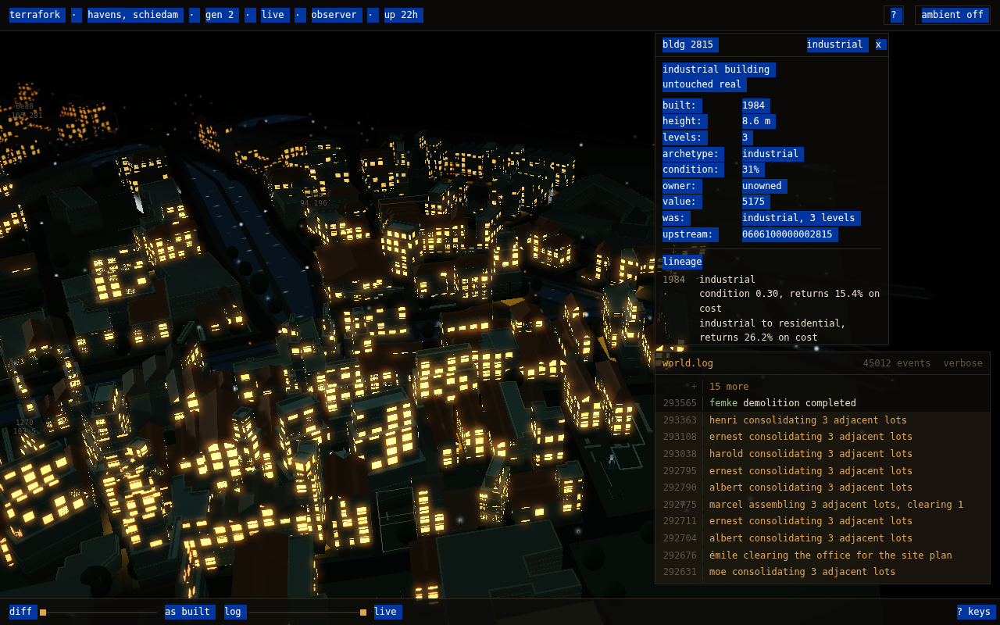
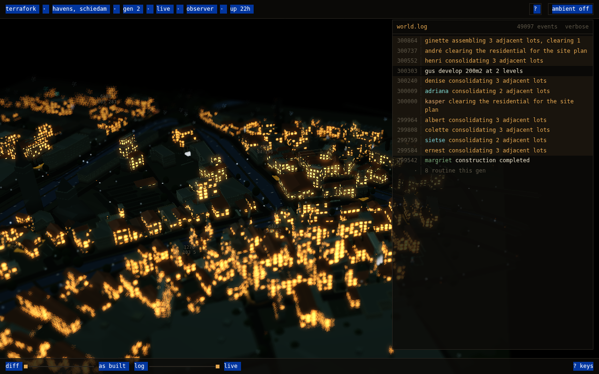
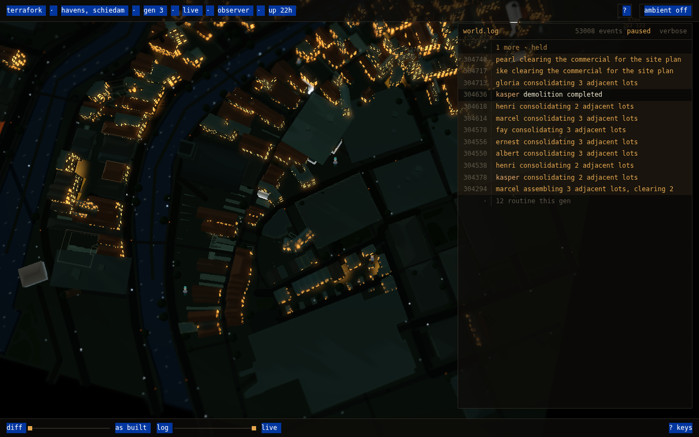
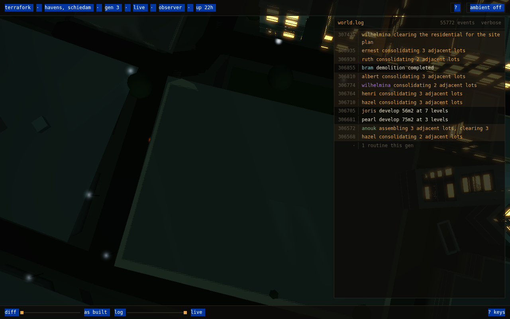
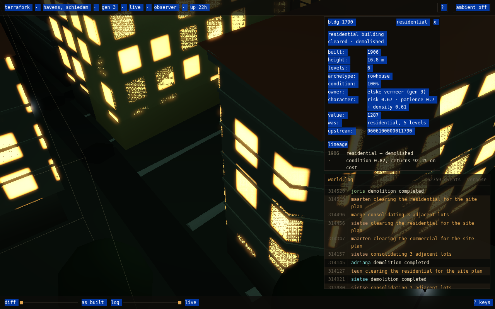
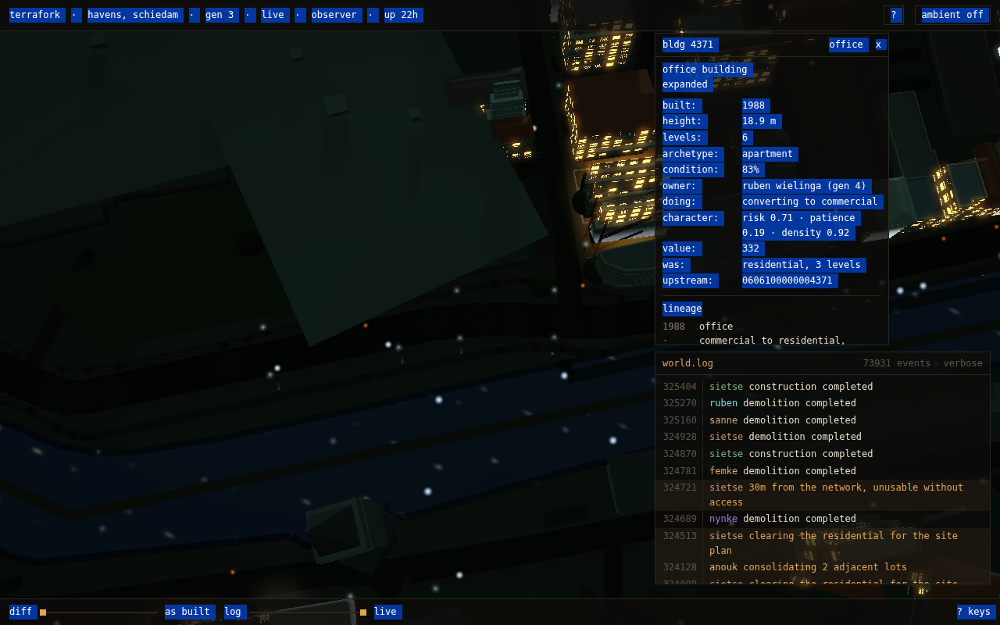
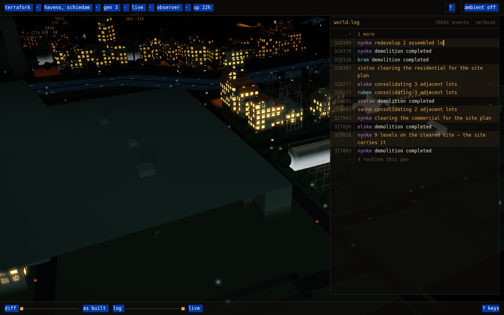

§66.3 contact sheet — seed 5, 10 frames from 10 sequences

seq 0 · 69% city · 21% building
seq 1 · 89% city · 70% building
seq 2 · 100% city · 99% building
seq 3 · 61% city · 44% building
seq 4 · 64% city · 40% building
seq 5 · 83% city · 43% building
seq 6 · 92% city · 76% building
seq 7 · 100% city · 99% building
seq 8 · 83% city · 53% building
seq 9 · 69% city · 49% building